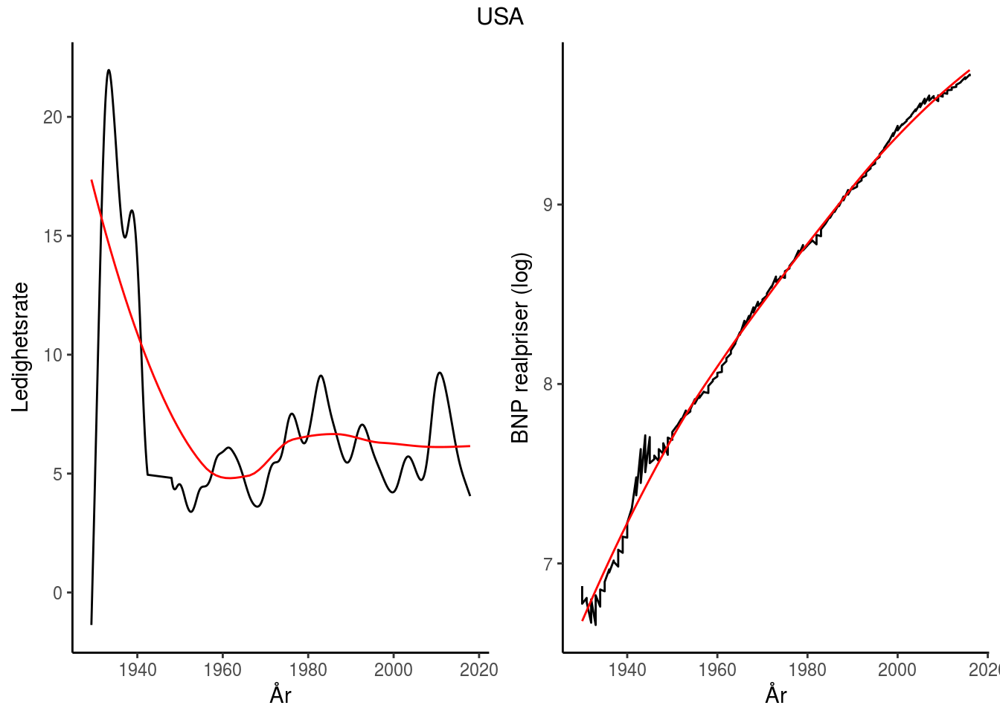
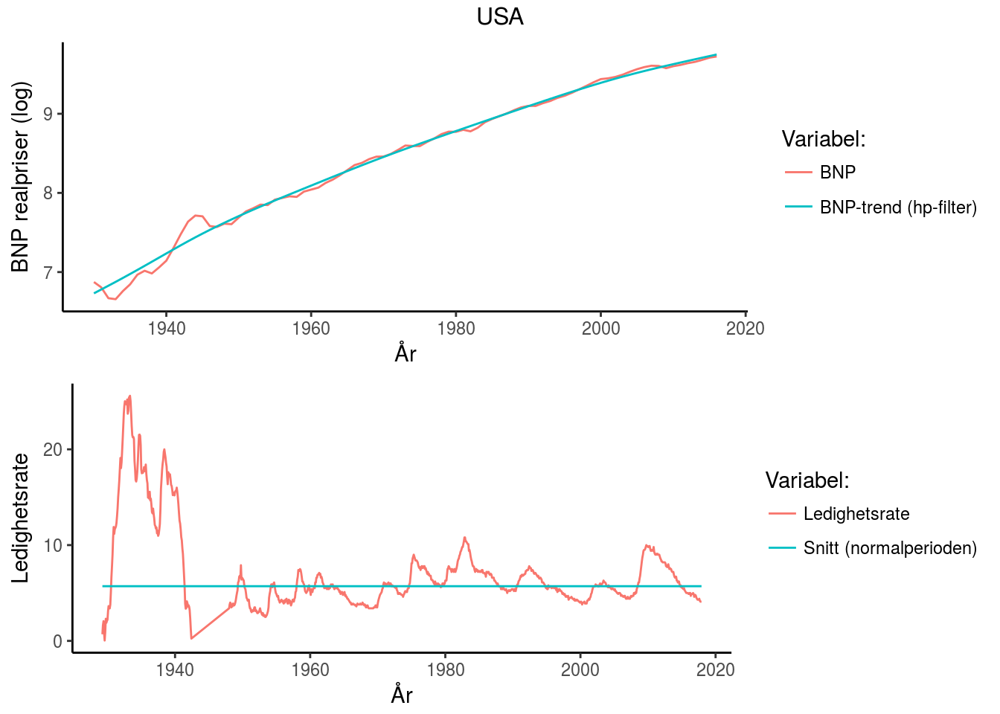
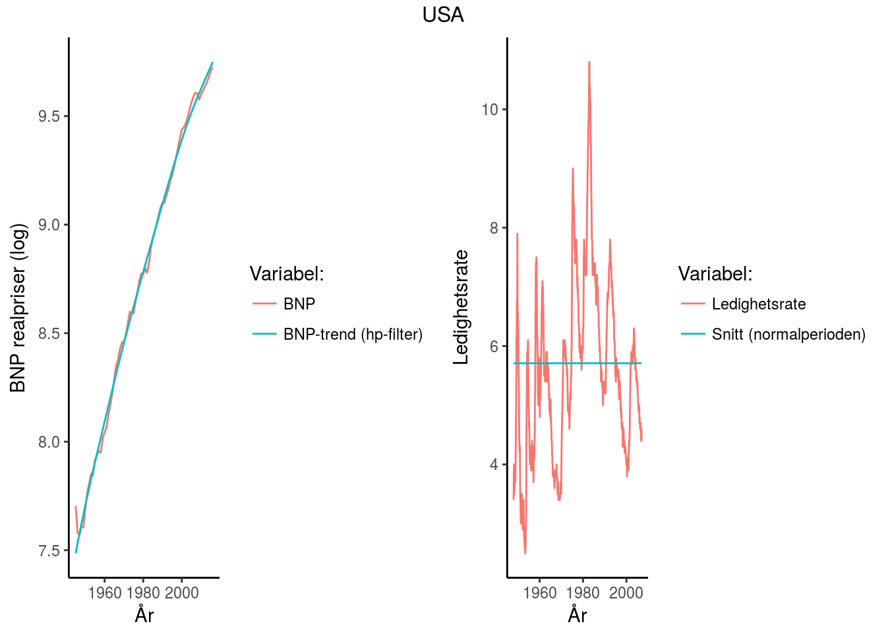

| Økonom | Konjunktursvingninger | Stabiliseringspolitikk | Krisepolitikk |
|---|---|---|---|
| Keynes/Krugman | Investeringer (‘animal spirit’) | Finanspolitikk | Ekspansiv finans- og pengepolitikk |
| Friedman | Endringer i pengemengden | Konstant pengemengdevekst | Ekspaniv pengepolitikk |
| Minsky | Økonmisk stabilitiet fører til ustabilitet | Finansreguleringer og sentralbank | Bail-out |
| Hayek | Kredittvekst | Fri konkurrane i banksektoren (ingen sentralbank) | Likvididering (bail-in) |
Innholdsfortegnelse
Introduksjon
Tre hovedtemaer:
- Konjunktursvingninger - del I
- Økonomisk vekst - del II
- Økonomiske kriser - del III
USA 1929-2016

USA 1946-2007

- Sentralt poeng: Makroøkonmien innehar selvkorrigerende mekanismer
USA 1929-1939 (“The Great Depression”) og 2007-2012 (“The Great Recession”)

- Sentralt poeng: Makroøkonmien selvkorrigerende egenskaper er satt ut av spill
Tre grunnleggende spørsmål blir forsøkt besvart
Hva forårsaker - konjunktursvingninger? - økonomisk vekst? - økonomiske kriser?
Hvilken rolle bør offentlige myndigheter spille?
- Stabiliseringspolitikk (aktiv/passiv)
- Vekstpolitikk (kapitalisme/offentlig sektor)
- Økonomiske kriser (stabiliserende/likvidierende)
Kjente makroøkonomer


Politikkanbefalinger
Abstraksjon
More things should not be used than are necessary (Entia non sunt multiplicanda praeter necessitatem)
Dette prinsippet slår fast at man ikke skal anta flere foreteelser (i vårt kurs betyr dette (1) aktører og (2) markeder og (3) størrelsen på økonomien) eller ting enn hva som trengs for å forklare de observasjoner som en studerer
I dette kurset (1) legger vi Ockhams barberkniv til grunn, samt forsøker vi å beskrive det fenomener vi ønsker å studere ved bruk av (2) matematikk
Sentrale aktører i makroøkonomien
Husholdninger (del I, del II og del III)
- Konsumerer og sparer
Bedrifter (del I, del II og del III)
- Produserer og investerer
Finansinstitusjoner (investerings- og forretningsbanker) (del III)
- Mellomledd mellom långive og låntakere
- Kredittskapende evner \(\Rightarrow\) bestemmer lånetilbudet i økonomien
Sentralbanken (del I og III)
- Bestemmer rentenivå eller pengemengden
Regjeringen og stortinget (del I og III)
- Finanspolitikk
Markedene vi studerer
Godemarkedet (varer og tjenester)
- del I, del II og del III
Pengemarkedet
- del I, del III
Arbeidsmarkedet
- del I, del III
Finansmarkeder (kapital- og lånemarkedet)
- del II, III
Valutakursmarkedet
- del I
Størrelsen på en økonomi
Lukket (global økonomi) økonomi
- Påvirkes ikke av omverden (Tilnærming: USA)
Liten åpen økonomi
- Påvirkes av, men påvirker ikke selv, omverden (Tilnærming: Norge)
Referanser
Smith cited (Gärtner 2016)
Gärtner, Manfred. 2016. Macroeconomics Under Flexible Exchange Rates. Pearson.